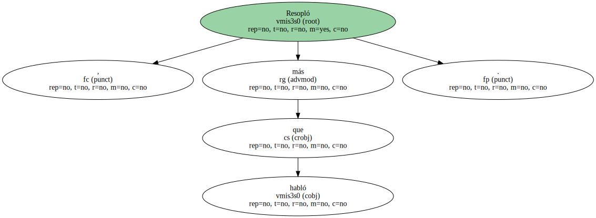
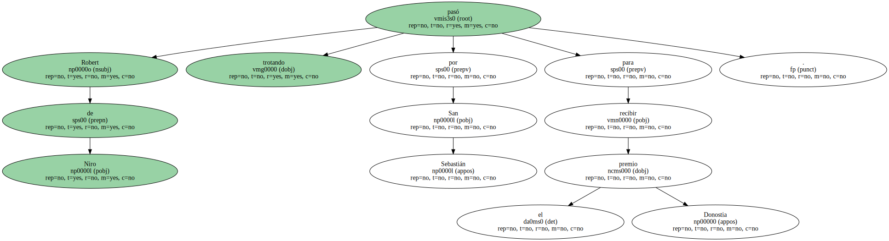
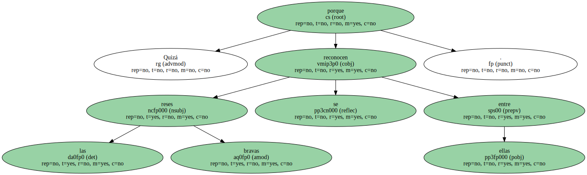

Resopló, más que habló.
Mostró su agradecimiento con sonidos que estaban más cerca de los bufidos que de las palabras.
El toro salvaje se asomó al ruedo del festival de cine, levantó una polvareda de expectación, dio un par de embestidas sin levantar la testuz y regresó a su toril en Manhattan antes de que el público se diera cuenta de que había terminado la faena.
Robert de Niro pasó trotando por San Sebastián para recibir el premio Donostia.
Y quienes estuvieron cerca de él creen que masculló: "Siempre es un honor recibir un premio".
De Niro desplegó ante los periodistas y el público una elocuencia de astado furioso, o a lo sumo de boxeador bravo, como ese Jake LaMotta al que prestó el rostro airado.
"De Niro no defraudó a nadie... quizá porque apenas dijo nada", observaba en El Mundo Borja Hermoso, quien resumía el sentir de una prensa que dedicó a De Niro adjetivos como "- lacónico", "aburrido", "hermético" y "parco en palabras" y subrayó su "característica cara de pocos amigos", su "gélido entusiasmo" y su "visible desgana".
Elsa Fernández-Santos describía en El País esa inquietante característica de la bestia que hace que "por algún extraño motivo nunca le asomen los dientes, aunque sonría".
Si bien a continuación admitía que "pese a todo, sus ojos negros y muy brillantes y la violencia que transmite su cara le hacen peligrosamente atractivo".
Y en ABC, E. Rodríguez Marchante recurría a imágenes menos turbadoras para disculpar el mutismo de un "alfarero de la interpretación (...) capaz de moldearse como arcilla por fuera y amoldarse como agua por dentro al personaje más difícil de enjaular en un cuerpo".

Ayer, nadie estaba seguro de que De Niro hubiera hablado o pasado por el festival.
Sólo el emocionado Javier Bardem, que le dio la mano y el premio a quien para él es "un maestro y una escuela", podía dar fe de su fugaz presencia.
Quizá porque las reses bravas se reconocen entre ellas.
